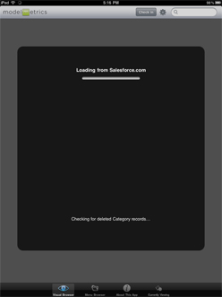

|  | After a sucessful login, the app synchronizes with Salesforce and downloads all the content and contacts to which you have access.
Actual downloaded content is defined by the security rules in Salesforce. |
|
Download time based on: 2. Amount of content set to be downloaded to the app 3. Internet connection |
It is important that you do not switch tasks or apps while the sync is in progress, especially if you have a large set of data and contacts. Switching tasks during sync may result in the application closing. If this happens, you will need to sync again.